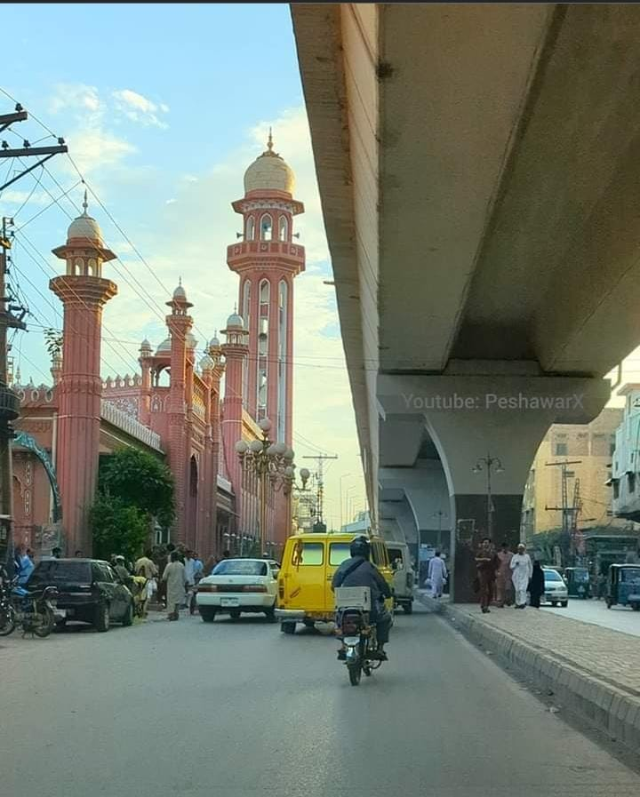
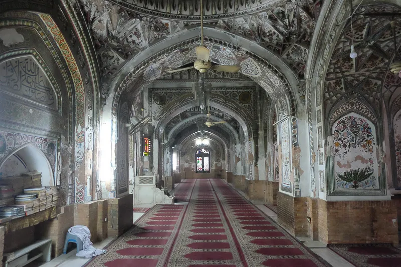

The world is a book and those who do not travel read only one page.
Explore the world through your eyes. Discover new horizons, stories, and inspiration. Let's embark on this journey together!
Join me on my incredible journeys across the globe. I'll share my personal travel stories, offering a glimpse into different cultures and unforgettable experiences.
Find handy guides filled with tips on what to see, where to stay, and the best local food to try. We've got our travel plans sorted.
Get ready to be inspired to explore the world. My stories will fuel your passion for adventure and motivate you to start your own explorations.
Bala Hisar Fort is a historical fort located in the heart of Peshawar city in Khyber Pakhtunkhwa province, Pakistan. It is a symbol of the rich history and culture of the region and has been witness to many significant events over the centuries This 15-acre fort is believed to be around 2500 years old. The view from the BRT is so amazing. BRT has its own stop for bala hisar. Bala Hisar Fort is located in the heart of Peshawar city, a historical fort. This building is a beautiful example of mixed architecture as it is a combination of Sikh Muslim and Mughal architecture
 Masjid Mahabat Khan. The 17th-century mosque is the only mosque in Peshawar that remains from the Mughal era. The others were destroyed by the Sikhs in the early 19th century. Throughout history, there have been many different powers here. Behind the gates, I see the geometry and the floral patterns. We are almost alone. It is not prayer time. Kausar explains and points at things. His words go in one ear and out the other. Ok, my shape is not the best.